Candidate List 20261106Last night — ZTF: 4,818 passed basic cuts (115 young) · LSST: 1,962 passed basic cuts (218 young)Previous Day Next Day
Section 1: New Sources (age<1d) Section 2: Old (1-5d) sources observed last nightplaceholder
Section 1: New Afterglow/FBOT Cands Last Night (1)
1. [ZTF] ZTF26acffhoq (Afterglow?) [Back to Top] [Share] [Trigger Swift] [Fritz Alert] [Fritz Source] [Lasair]RA, Dec: 135.80342, 7.24845 9h 3m12.82s, 7d14m54.42sGalactic (l, b): 222.05572, 32.52423 ext(g-r) = 0.068


TESS: Sectors [ 8 34 44 45 46 61 72 88]
SDSS (<15 kpc):Found SDSS phot-z: z=0.09; peak abs mag = -18.65
PS1: 0 sources in 3 arcsec
LegacySurvey: 1 sources in 3 arcsec Closest: d = 0.80 arcsec, 254.8 deg (east of north) photoz=0.09 (68% bounds 0.06, 0.13), type=SER peak abs mag (ext. corrected) = -18.57 (68% bounds -17.69, -19.44)

Extinction-corrected gr color:
From alerts: 0.03 +/- 0.23 mag
Consistent with synchrotron, g-r>0!
Rise Rate:
r: 0.5 mag/day
Fade Rate:
Section 2: Older Sources Observed Last Night (30)
0. [LSST] 170028485828935834 (Afterglow?) [Back to Top] [Fritz Alert] [Fritz Source] [Lasair]RA, Dec: 57.65657, -48.77264 3h50m37.58s, -48d-46m-21.49sGalactic (l, b): 257.41828, -49.39038 ext(g-r) = 0.008


TESS: Sectors [ 3 30]
PS1: 0 sources in 3 arcsec
LegacySurvey: 1 sources in 3 arcsec Closest: d = 0.04 arcsec, 187.3 deg (east of north) photoz=0.61 (68% bounds 0.5, 0.72), type=REX peak abs mag (ext. corrected) = -20.65 (68% bounds -20.12, -21.09)

Extinction-corrected gr color:
From alerts: 0.3 +/- 0.09 mag
Extinction-corrected gi color:
From alerts: 0.3 +/- 0.16 mag
Extinction-corrected ri color:
From alerts: -0.0 +/- 0.16 mag
Consistent with synchrotron, g-r>0!
Rise Rate:
g: 0.01 mag/day
i: 0.0 mag/day
z: 0.0 mag/day
Fade Rate:
g: 2.21 mag/day
1. [ZTF] ZTF26acdwxov (FBOT?) [Back to Top] [Share] [Trigger Swift] [Fritz Alert] [Fritz Source] [Lasair]RA, Dec: 71.75013, -19.97236 4h47m0.03s, -19d-58m-20.48sGalactic (l, b): 218.79024, -36.00998 ext(g-r) = 0.061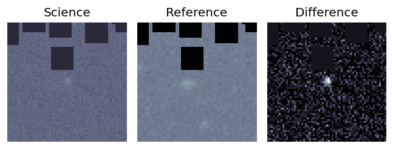
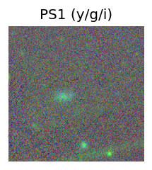
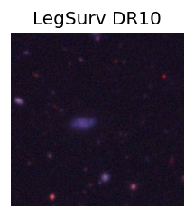
TESS: Sectors [ 98 106 107 108 109]
PS1: 0 sources in 3 arcsec
LegacySurvey: 1 sources in 3 arcsec Closest: d = 2.27 arcsec, 108.5 deg (east of north) photoz=0.23 (68% bounds 0.09, 0.79), type=REX peak abs mag (ext. corrected) = -22.06 (68% bounds -19.72, -25.24)
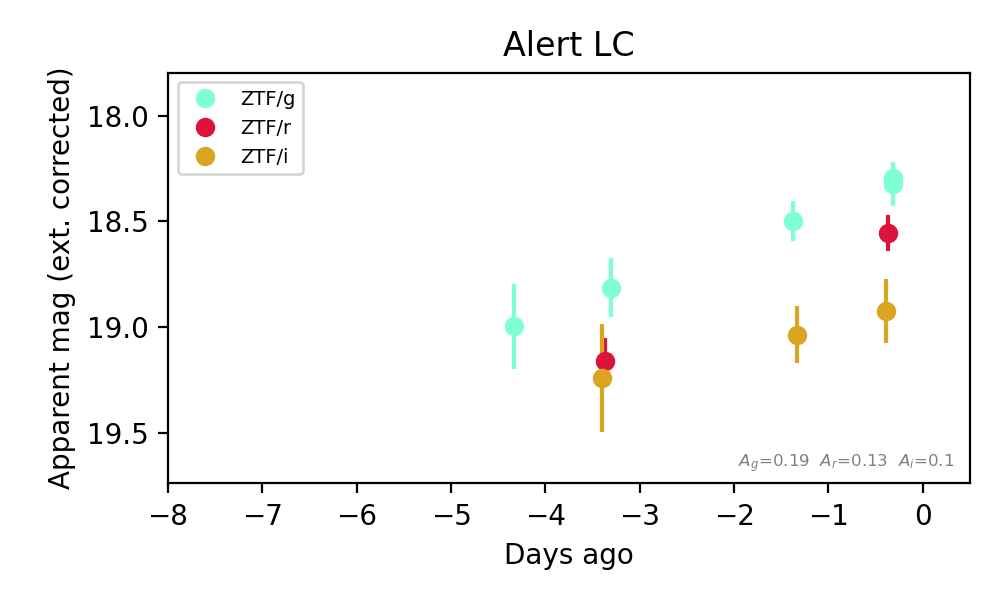
Extinction-corrected gr color:
From alerts: -0.25 +/- 0.1 mag
Extinction-corrected gi color:
From alerts: -0.62 +/- 0.16 mag
Extinction-corrected ri color:
From alerts: -0.37 +/- 0.17 mag
Rise Rate:
g: 0.17 mag/day
r: 0.2 mag/day
i: 0.03 mag/day
Fade Rate:
2. [ZTF] ZTF26acdydgv (FBOT?) [Back to Top] [Share] [Trigger Swift] [Fritz Alert] [Fritz Source] [Lasair]RA, Dec: 165.27096, 64.18865 11h 1m5.03s, 64d11m19.16sGalactic (l, b): 140.80718, 48.93279 ext(g-r) = 0.017


TESS: Sectors [ 14 21 41 48 74 75 119 120]
SDSS (<15 kpc):Found SDSS phot-z: z=0.24; peak abs mag = -20.89
PS1: 0 sources in 3 arcsec
LegacySurvey: 1 sources in 3 arcsec Closest: d = 2.03 arcsec, 272.6 deg (east of north) photoz=0.18 (68% bounds 0.15, 0.22), type=EXP peak abs mag (ext. corrected) = -20.14 (68% bounds -19.73, -20.68)

Extinction-corrected gr color:
From alerts: -0.17 +/- 99 mag
Rise Rate:
g: 0.22 mag/day
r: 0.03 mag/day
Fade Rate:
3. [ZTF] ZTF26aceadfg (Afterglow?) [Back to Top] [Share] [Trigger Swift] [Fritz Alert] [Fritz Source] [Lasair]RA, Dec: 2.15802, -0.60204 0h 8m37.93s, 0d-36m-7.34sGalactic (l, b): 99.99017, -61.55231 WARNING: -1.41 deg from ecliptic plane ext(g-r) = 0.042Observed last night in r, not detected: limit 19.99 (5σ), 3.12 d after the last r detection at 19.36 → fading ≥ 0.20 mag/day.


TESS: Sectors [42 70]
PS1: 0 sources in 3 arcsec
LegacySurvey: 1 sources in 3 arcsec Closest: d = 2.27 arcsec, 273.4 deg (east of north) photoz=1.11 (68% bounds 0.66, 1.5), type=REX peak abs mag (ext. corrected) = -25.16 (68% bounds -23.8, -25.98)

Extinction-corrected gr color:
From alerts: 0.28 +/- 0.26 mag
Consistent with synchrotron, g-r>0!
Rise Rate:
r: 0.07 mag/day
Fade Rate:
g: 0.24 mag/day
r: 0.27 mag/day
4. [ZTF] ZTF26acecgop (FBOT?) [Back to Top] [Share] [Trigger Swift] [Fritz Alert] [Fritz Source] [Lasair]RA, Dec: 359.77281, 51.7971 23h59m5.47s, 51d47m49.56sGalactic (l, b): 114.75102, -10.24123 ext(g-r) = 0.249


TESS: Sectors [57 84]
PS1: 1 source in 3 arcsec Closest: d = 1.46 arcsec photoz=0.11+/-0.01 peak abs mag = -20.36
LegacySurvey: 0 sources in 3 arcsec

Extinction-corrected gr color:
From alerts: -0.17 +/- 0.12 mag
Rise Rate:
g: 0.28 mag/day
r: 0.26 mag/day
Fade Rate:
5. [ZTF] ZTF26acecjze (Afterglow?) [Back to Top] [Share] [Trigger Swift] [Fritz Alert] [Fritz Source] [Lasair]RA, Dec: 351.25131, 9.45223 23h25m0.31s, 9d27m8.02sGalactic (l, b): 90.16322, -47.8444 ext(g-r) = 0.044


TESS: Sectors [42 56 83 92]
SDSS (<15 kpc):Found SDSS phot-z: z=0.05; peak abs mag = -17.08
PS1: 0 sources in 3 arcsec
LegacySurvey: 1 sources in 3 arcsec Closest: d = 3.35 arcsec, 166.1 deg (east of north) photoz=0.07 (68% bounds 0.06, 0.09), type=REX peak abs mag (ext. corrected) = -17.98 (68% bounds -17.63, -18.38)

Extinction-corrected gr color:
From alerts: 0.12 +/- 0.21 mag
Extinction-corrected gi color:
From alerts: 0.32 +/- 0.29 mag
Extinction-corrected ri color:
From alerts: 0.2 +/- 0.27 mag
Consistent with synchrotron, g-r>0!
Rise Rate:
g: 0.04 mag/day
r: 0.02 mag/day
Fade Rate:
g: 0.23 mag/day
r: 0.17 mag/day
6. [ZTF] ZTF26aceiwfc (Afterglow?) [Back to Top] [Share] [Trigger Swift] [Fritz Alert] [Fritz Source] [Lasair]RA, Dec: 112.65768, -6.02593 7h30m37.84s, -6d-1m-33.35sGalactic (l, b): 222.80739, 5.89763 ext(g-r) = 0.14


TESS: Sectors [ 7 34 111 112]
PS1: 1 source in 3 arcsec Closest: d = 2.18 arcsec photoz=0.08+/-0.00 peak abs mag = -19.03
LegacySurvey: 0 sources in 3 arcsec

Extinction-corrected gr color:
From alerts: 0.14 +/- 0.27 mag
Extinction-corrected gi color:
From alerts: 0.24 +/- 0.27 mag
Extinction-corrected ri color:
From alerts: 0.23 +/- 0.19 mag
Consistent with synchrotron, g-r>0!
Rise Rate:
i: 0.07 mag/day
Fade Rate:
i: 0.38 mag/day
7. [ZTF] ZTF26acekidc (Afterglow?) [Back to Top] [Share] [Trigger Swift] [Fritz Alert] [Fritz Source] [Lasair]RA, Dec: 124.82568, -1.31403 8h19m18.16s, -1d-18m-50.50sGalactic (l, b): 224.56814, 18.80597 ext(g-r) = 0.076Observed last night in g, not detected: limit 20.22 (5σ), 4.06 d after the last g detection at 19.37 → fading ≥ 0.21 mag/day.


TESS: Sectors [ 7 34 61 88 112]
SDSS (<15 kpc):Found SDSS phot-z: z=0.38; peak abs mag = -23.11
PS1: 0 sources in 3 arcsec
LegacySurvey: 1 sources in 3 arcsec Closest: d = 6.76 arcsec, 245.7 deg (east of north) photoz=0.44 (68% bounds 0.37, 0.52), type=REX peak abs mag (ext. corrected) = -23.5 (68% bounds -23.05, -23.93)

Extinction-corrected gr color:
From alerts: 1.16 +/- 99 mag
Rise Rate:
r: 45.4 mag/day
Fade Rate:
g: 0.53 mag/day
r: 0.6 mag/day
8. [ZTF] ZTF26aceemoa (FBOT?) [Back to Top] [Share] [Trigger Swift] [Fritz Alert] [Fritz Source] [Lasair]RA, Dec: 62.77433, 19.58053 4h11m5.84s, 19d34m49.90sGalactic (l, b): 174.35813, -22.77608 WARNING: -1.48 deg from ecliptic plane ext(g-r) = 0.51


TESS: Sectors [44 70 71]
SDSS (<15 kpc):Found SDSS phot-z: z=0.05; peak abs mag = -18.50
PS1: 1 source in 3 arcsec Closest: d = 1.77 arcsec photoz=0.15+/-0.10 peak abs mag = -21.24
LegacySurvey: 0 sources in 3 arcsec

Extinction-corrected gr color:
From alerts: -0.18 +/- 0.17 mag
Extinction-corrected gi color:
From alerts: -1.01 +/- 99 mag
Extinction-corrected ri color:
From alerts: -0.83 +/- 99 mag
Rise Rate:
g: 0.34 mag/day
r: 1.22 mag/day
Fade Rate:
g: 28.44 mag/day
r: 46.9 mag/day
9. [ZTF] ZTF26aceiyml (Afterglow?) [Back to Top] [Share] [Trigger Swift] [Fritz Alert] [Fritz Source] [Lasair]RA, Dec: 184.01973, 58.89086 12h16m4.73s, 58d53m27.11sGalactic (l, b): 131.46454, 57.64779 ext(g-r) = 0.015Observed last night in g, not detected: limit 20.05 (5σ), 1.06 d after the last g detection at 19.68 → fading ≥ 0.35 mag/day.

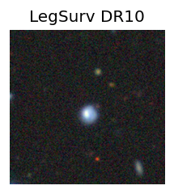
TESS: Sectors [ 15 22 41 48 75 120 121]
NED host (10 arcsec):Found WISEA J121604.73+585323.9 (G, 3.2″); NED spec-z: z=0.1289 [zflag SLS]; peak abs mag = -19.54
PS1: 0 sources in 3 arcsec
LegacySurvey: 1 sources in 3 arcsec Closest: d = 1.53 arcsec, 238.1 deg (east of north) photoz=0.13 (68% bounds 0.06, 0.37), type=REX peak abs mag (ext. corrected) = -19.64 (68% bounds -17.74, -22.09)

Extinction-corrected gr color:
From alerts: -0.18 +/- 0.24 mag
Consistent with synchrotron, g-r>0!
Rise Rate:
Fade Rate:
g: 0.35 mag/day
10. [ZTF] ZTF26aceldss (Afterglow?) [Back to Top] [Share] [Trigger Swift] [Fritz Alert] [Fritz Source] [Lasair]RA, Dec: 118.42083, 30.43711 7h53m41.00s, 30d26m13.60sGalactic (l, b): 190.35221, 25.90313 ext(g-r) = 0.057Observed last night in g, not detected: limit 20.45 (5σ), 1.08 d after the last g detection at 19.91 → fading ≥ 0.50 mag/day.


TESS: Sectors [20 44 45 46 47 60 72]
PS1: 0 sources in 3 arcsec
LegacySurvey: 1 sources in 3 arcsec Closest: d = 0.18 arcsec, 14.9 deg (east of north) photoz=0.97 (68% bounds 0.8, 1.15), type=PSF peak abs mag (ext. corrected) = -24.69 (68% bounds -24.18, -25.15)

Extinction-corrected gr color:
From alerts: -0.47 +/- 0.25 mag
Extinction-corrected gi color:
From alerts: -0.11 +/- 0.31 mag
Extinction-corrected ri color:
From alerts: 0.36 +/- 0.34 mag
Consistent with synchrotron, g-r>0!
Rise Rate:
g: 0.21 mag/day
r: 0.99 mag/day
Fade Rate:
g: 0.5 mag/day
r: 0.78 mag/day
11. [ZTF] ZTF26acetyyo (Afterglow?) [Back to Top] [Share] [Trigger Swift] [Fritz Alert] [Fritz Source] [Lasair]RA, Dec: 95.78953, -4.30062 6h23m9.49s, -4d-18m-2.24sGalactic (l, b): 213.55574, -8.24615 ext(g-r) = 0.393Observed last night in g, not detected: limit 20.15 (5σ), 4.00 d after the last g detection at 19.52 → fading ≥ 0.16 mag/day.


TESS: Sectors [ 6 33 87 110 111]
PS1: 1 source in 3 arcsec Closest: d = 6.84 arcsec photoz=0.15+/-0.13 peak abs mag = -20.44
LegacySurvey: 0 sources in 3 arcsec

Extinction-corrected gr color:
From alerts: -0.36 +/- 99 mag
Extinction-corrected gi color:
From alerts: 0.28 +/- 99 mag
Rise Rate:
g: 0.05 mag/day
Fade Rate:
g: 0.56 mag/day
12. [ZTF] ZTF26acewktq (Afterglow?) [Back to Top] [Share] [Trigger Swift] [Fritz Alert] [Fritz Source] [Lasair]RA, Dec: 83.80512, 41.43002 5h35m13.23s, 41d25m48.08sGalactic (l, b): 168.26381, 4.81178 ext(g-r) = 0.528Observed last night in r, not detected: limit 20.43 (5σ), 0.92 d after the last r detection at 19.16 → fading ≥ 1.38 mag/day.

TESS: Sectors [59 73 86]
PS1: 0 sources in 3 arcsec
LegacySurvey: 0 sources in 3 arcsec

Extinction-corrected gr color:
From alerts: 0.82 +/- 99 mag
Rise Rate:
r: 0.69 mag/day
Fade Rate:
r: 1.38 mag/day
13. [ZTF] ZTF26aceaevy (Afterglow?FBOT?) [Back to Top] [Share] [Trigger Swift] [Fritz Alert] [Fritz Source] [Lasair]RA, Dec: 11.53836, 0.39278 0h46m9.21s, 0d23m34.00sGalactic (l, b): 120.07476, -62.44965 WARNING: -4.2 deg from ecliptic plane ext(g-r) = 0.022


TESS: Sectors [42 43 70]
SDSS (<15 kpc):Found SDSS phot-z: z=0.35; peak abs mag = -22.05
PS1: 0 sources in 3 arcsec
LegacySurvey: 1 sources in 3 arcsec Closest: d = 0.51 arcsec, 45.7 deg (east of north) photoz=0.09 (68% bounds 0.06, 0.15), type=SER peak abs mag (ext. corrected) = -18.86 (68% bounds -17.82, -20.03)

Extinction-corrected gr color:
From alerts: 0.57 +/- 0.32 mag
Extinction-corrected gi color:
From alerts: 0.73 +/- 99 mag
Extinction-corrected ri color:
From alerts: 0.16 +/- 99 mag
Consistent with synchrotron, g-r>0!
Rise Rate:
r: 0.23 mag/day
Fade Rate:
r: 8.42 mag/day
14. [ZTF] ZTF26acebohm (FBOT?) [Back to Top] [Share] [Trigger Swift] [Fritz Alert] [Fritz Source] [Lasair]RA, Dec: 359.72604, 12.14779 23h58m54.25s, 12d 8m52.06sGalactic (l, b): 103.26141, -48.70722 ext(g-r) = 0.106


TESS: Sectors [42 43 56 83]
SDSS (<15 kpc):Found SDSS phot-z: z=0.06; peak abs mag = -19.35
PS1: 0 sources in 3 arcsec
LegacySurvey: 1 sources in 3 arcsec Closest: d = 0.41 arcsec, 356.8 deg (east of north) photoz=0.38 (68% bounds 0.24, 0.69), type=EXP peak abs mag (ext. corrected) = -23.83 (68% bounds -22.63, -25.38)

Extinction-corrected gr color:
From alerts: -0.04 +/- 0.08 mag
Extinction-corrected gi color:
From alerts: -0.39 +/- 0.1 mag
Extinction-corrected ri color:
From alerts: -0.35 +/- 0.09 mag
Consistent with synchrotron, g-r>0!
Rise Rate:
g: 0.39 mag/day
r: 0.24 mag/day
i: 0.3 mag/day
Fade Rate:
15. [ZTF] ZTF26acecdco (FBOT?) [Back to Top] [Share] [Trigger Swift] [Fritz Alert] [Fritz Source] [Lasair]RA, Dec: 35.32596, 44.00669 2h21m18.23s, 44d 0m24.07sGalactic (l, b): 139.54227, -15.94751 ext(g-r) = 0.083


TESS: Sectors [18 58 85]
PS1: 1 source in 3 arcsec Closest: d = 4.07 arcsec photoz=0.13+/-0.03 peak abs mag = -19.50
LegacySurvey: 0 sources in 3 arcsec

Extinction-corrected gr color:
From alerts: -0.28 +/- 0.26 mag
Rise Rate:
g: 0.7 mag/day
r: 0.04 mag/day
Fade Rate:
g: 0.47 mag/day
16. [ZTF] ZTF26aceipjj (FBOT?) [Back to Top] [Share] [Trigger Swift] [Fritz Alert] [Fritz Source] [Lasair]RA, Dec: 105.72528, -18.02982 7h 2m54.07s, -18d-1m-47.35sGalactic (l, b): 230.30557, -5.67127 ext(g-r) = 0.508


TESS: Sectors [ 7 33 87 108 109 110 111]
PS1: 1 source in 3 arcsec Closest: d = 8.30 arcsec photoz=1.02+/-0.08 peak abs mag = -28.69
LegacySurvey: 0 sources in 3 arcsec

Extinction-corrected gr color:
From alerts: -0.41 +/- 0.07 mag
Rise Rate:
i: 0.22 mag/day
Fade Rate:
g: 0.2 mag/day
17. [ZTF] ZTF26acenihw (FBOT?) [Back to Top] [Share] [Trigger Swift] [Fritz Alert] [Fritz Source] [Lasair]RA, Dec: 27.10311, -8.49929 1h48m24.75s, -8d-29m-57.44sGalactic (l, b): 161.46388, -67.00629 ext(g-r) = 0.032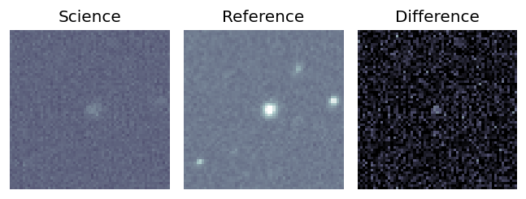
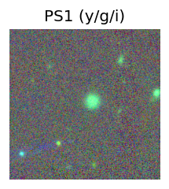
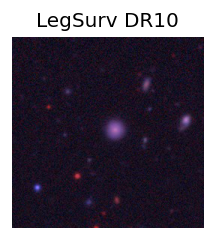
TESS: Sectors [ 3 30 97 108]
PS1: 0 sources in 3 arcsec
LegacySurvey: 1 sources in 3 arcsec Closest: d = 2.41 arcsec, 232.4 deg (east of north) photoz=0.21 (68% bounds 0.14, 0.31), type=EXP peak abs mag (ext. corrected) = -20.34 (68% bounds -19.43, -21.34)
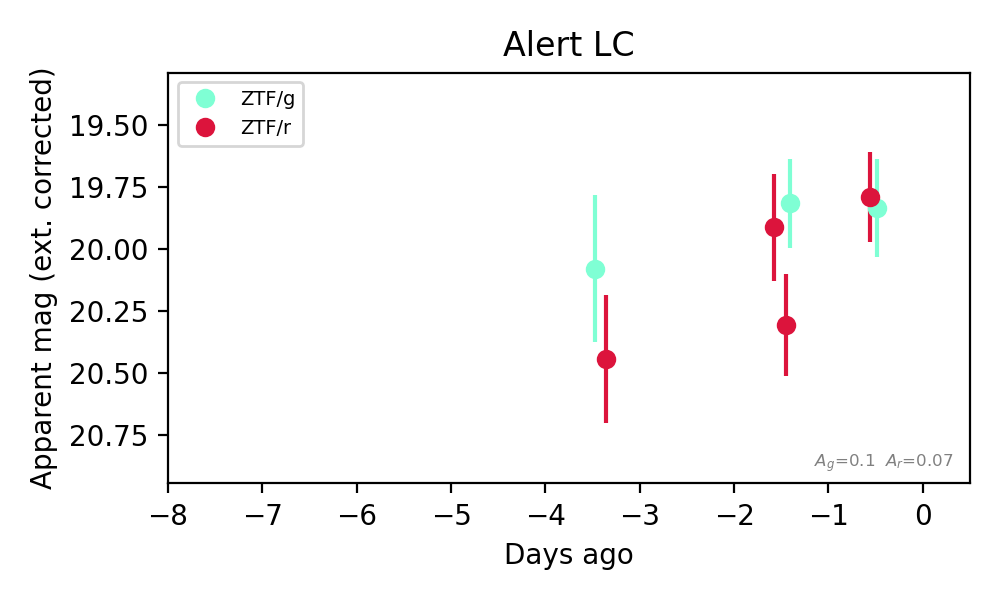
Extinction-corrected gr color:
From alerts: 0.05 +/- 0.27 mag
Consistent with synchrotron, g-r>0!
Rise Rate:
r: 0.23 mag/day
Fade Rate:
18. [ZTF] ZTF26acenptw (FBOT?) [Back to Top] [Share] [Trigger Swift] [Fritz Alert] [Fritz Source] [Lasair]RA, Dec: 326.46373, 21.62607 21h45m51.29s, 21d37m33.86sGalactic (l, b): 75.5943, -23.73725 ext(g-r) = 0.119

TESS: Sectors [55 82]
SDSS (<15 kpc):Found SDSS phot-z: z=0.14; peak abs mag = -19.67
PS1: 0 sources in 3 arcsec
LegacySurvey: 1 sources in 3 arcsec Closest: d = 3.05 arcsec, 63.2 deg (east of north) photoz=1.04 (68% bounds 0.52, 1.41), type=REX peak abs mag (ext. corrected) = -24.79 (68% bounds -22.95, -25.61)

Extinction-corrected gr color:
From alerts: -0.02 +/- 0.2 mag
Consistent with synchrotron, g-r>0!
Rise Rate:
g: 0.25 mag/day
r: 0.37 mag/day
Fade Rate:
19. [ZTF] ZTF26aceoflw (FBOT?) [Back to Top] [Share] [Trigger Swift] [Fritz Alert] [Fritz Source] [Lasair]RA, Dec: 10.86092, -2.03773 0h43m26.62s, -2d-2m-15.84sGalactic (l, b): 118.23033, -64.83648 ext(g-r) = 0.024


TESS: Sectors [ 3 30 42 43 70 97]
SDSS (<15 kpc):Found SDSS phot-z: z=0.09; peak abs mag = -18.45
PS1: 0 sources in 3 arcsec
LegacySurvey: 1 sources in 3 arcsec Closest: d = 1.44 arcsec, 76.3 deg (east of north) photoz=0.15 (68% bounds 0.09, 0.19), type=SER peak abs mag (ext. corrected) = -19.7 (68% bounds -18.61, -20.26)

Extinction-corrected gr color:
From alerts: 0.05 +/- 0.27 mag
Consistent with synchrotron, g-r>0!
Rise Rate:
r: 0.26 mag/day
Fade Rate:
20. [ZTF] ZTF26aceqzef (FBOT?) [Back to Top] [Share] [Trigger Swift] [Fritz Alert] [Fritz Source] [Lasair]RA, Dec: 55.78047, 0.6487 3h43m7.31s, 0d38m55.33sGalactic (l, b): 186.13203, -40.28035 ext(g-r) = 0.121


TESS: Sectors [ 5 31 109]
SDSS (<15 kpc):Found SDSS phot-z: z=0.08; peak abs mag = -18.50
NED host (10 arcsec):Found WISEA J034307.30+003849.5 (G, 5.8″); NED spec-z: z=0.0680 [zflag SLS]; peak abs mag = -18.13
PS1: 0 sources in 3 arcsec
LegacySurvey: 1 sources in 3 arcsec Closest: d = 1.50 arcsec, 128.5 deg (east of north) photoz=0.34 (68% bounds 0.16, 0.79), type=PSF peak abs mag (ext. corrected) = -21.96 (68% bounds -20.05, -24.15)

Extinction-corrected gr color:
From alerts: 0.16 +/- 0.25 mag
Extinction-corrected gi color:
From alerts: 0.32 +/- 0.28 mag
Extinction-corrected ri color:
From alerts: 0.16 +/- 0.23 mag
Consistent with synchrotron, g-r>0!
Rise Rate:
g: 0.34 mag/day
r: 0.1 mag/day
i: 0.29 mag/day
Fade Rate:
21. [ZTF] ZTF26acerebz (FBOT?) [Back to Top] [Share] [Trigger Swift] [Fritz Alert] [Fritz Source] [Lasair]RA, Dec: 32.22566, 7.7038 2h 8m54.16s, 7d42m13.67sGalactic (l, b): 153.99197, -50.43725 ext(g-r) = 0.063


TESS: Sectors [42 43 70 71]
SDSS (<15 kpc):Found SDSS phot-z: z=0.15; peak abs mag = -19.87
PS1: 0 sources in 3 arcsec
LegacySurvey: 1 sources in 3 arcsec Closest: d = 0.49 arcsec, 39.9 deg (east of north) photoz=0.46 (68% bounds 0.34, 0.56), type=REX peak abs mag (ext. corrected) = -22.64 (68% bounds -21.9, -23.16)

Extinction-corrected gr color:
From alerts: -0.02 +/- 0.23 mag
Extinction-corrected gi color:
From alerts: -0.41 +/- 0.29 mag
Extinction-corrected ri color:
From alerts: -0.39 +/- 0.27 mag
Consistent with synchrotron, g-r>0!
Rise Rate:
g: 0.23 mag/day
r: 0.24 mag/day
Fade Rate:
22. [ZTF] ZTF26acevisb (FBOT?) [Back to Top] [Share] [Trigger Swift] [Fritz Alert] [Fritz Source] [Lasair]RA, Dec: 138.10646, 50.67473 9h12m25.55s, 50d40m29.02sGalactic (l, b): 167.70295, 42.70469 ext(g-r) = 0.016

TESS: Sectors [21 47]
SDSS (<15 kpc):Found SDSS phot-z: z=0.28; peak abs mag = -21.18
PS1: 0 sources in 3 arcsec
LegacySurvey: 1 sources in 3 arcsec Closest: d = 1.07 arcsec, 231.0 deg (east of north) photoz=0.08 (68% bounds 0.04, 0.12), type=EXP peak abs mag (ext. corrected) = -18.07 (68% bounds -16.6, -19.15)

Extinction-corrected gr color:
From alerts: 0.12 +/- 0.26 mag
Consistent with synchrotron, g-r>0!
Rise Rate:
g: 0.03 mag/day
r: 0.31 mag/day
Fade Rate:
23. [ZTF] ZTF26acevjuf (FBOT?) [Back to Top] [Share] [Trigger Swift] [Fritz Alert] [Fritz Source] [Lasair]RA, Dec: 141.82293, 54.39613 9h27m17.50s, 54d23m46.06sGalactic (l, b): 162.04837, 44.15139 ext(g-r) = 0.031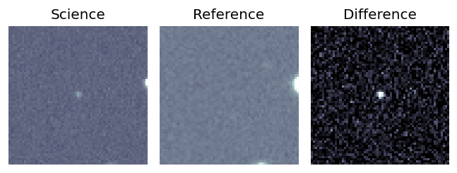
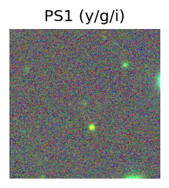
TESS: Sectors [21 47 74]
PS1: 0 sources in 3 arcsec
LegacySurvey: 1 sources in 3 arcsec Closest: d = 0.97 arcsec, 127.6 deg (east of north) photoz=0.44 (68% bounds 0.32, 0.66), type=REX peak abs mag (ext. corrected) = -22.39 (68% bounds -21.62, -23.44)
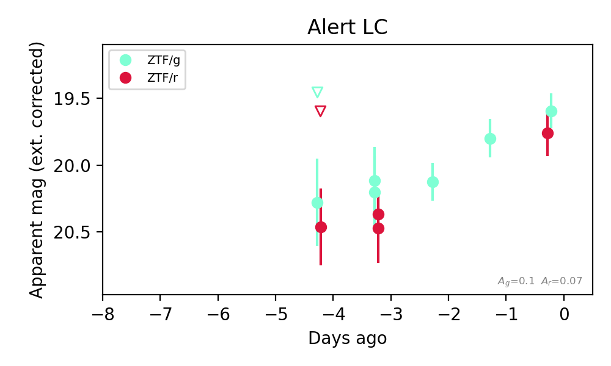
Extinction-corrected gr color:
From alerts: -0.16 +/- 0.22 mag
Consistent with synchrotron, g-r>0!
Rise Rate:
g: 0.19 mag/day
r: 0.2 mag/day
Fade Rate:
24. [ZTF] ZTF26aceyaea (FBOT?) [Back to Top] [Share] [Trigger Swift] [Fritz Alert] [Fritz Source] [Lasair]RA, Dec: 5.95141, 22.74514 0h23m48.34s, 22d44m42.49sGalactic (l, b): 114.64503, -39.68157 ext(g-r) = 0.067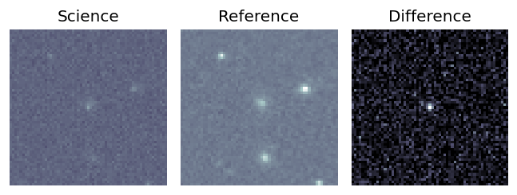
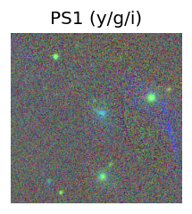
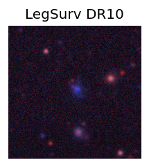
TESS: Sectors [17 57 84]
SDSS (<15 kpc):Found SDSS phot-z: z=0.44; peak abs mag = -22.33
PS1: 0 sources in 3 arcsec
LegacySurvey: 1 sources in 3 arcsec Closest: d = 1.90 arcsec, 315.8 deg (east of north) photoz=0.03 (68% bounds 0.01, 0.04), type=DEV peak abs mag (ext. corrected) = -15.7 (68% bounds -13.93, -16.69)
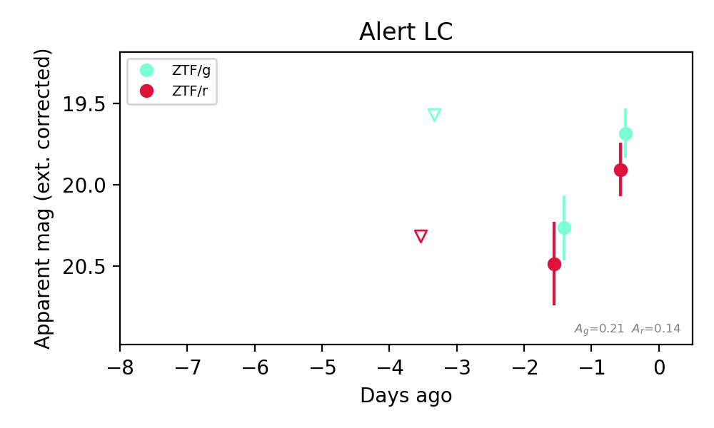
Extinction-corrected gr color:
From alerts: -0.22 +/- 0.22 mag
Rise Rate:
g: 0.64 mag/day
r: 0.14 mag/day
Fade Rate:
25. [ZTF] ZTF26aceztky (Afterglow?) [Back to Top] [Share] [Trigger Swift] [Fritz Alert] [Fritz Source] [Lasair]RA, Dec: 34.66711, 18.29819 2h18m40.11s, 18d17m53.47sGalactic (l, b): 150.30006, -39.89287 WARNING: 4.2 deg from ecliptic plane ext(g-r) = 0.123


TESS: Sectors [42 42 43 70 71]
SDSS (<15 kpc):Found SDSS phot-z: z=0.09; peak abs mag = -18.82
NED photo-z only: WISEA J021840.02+181752.2 (G, 1.7″) z=0.0929 [zflag PUN] — not used for peak abs mag
PS1: 0 sources in 3 arcsec
LegacySurvey: 1 sources in 3 arcsec Closest: d = 1.69 arcsec, 220.9 deg (east of north) photoz=0.09 (68% bounds 0.07, 0.1), type=SER peak abs mag (ext. corrected) = -18.7 (68% bounds -18.21, -19.1)

Extinction-corrected gr color:
From alerts: 0.37 +/- 99 mag
Extinction-corrected gi color:
From alerts: 0.67 +/- 99 mag
Extinction-corrected ri color:
From alerts: 0.23 +/- 0.15 mag
Consistent with synchrotron, g-r>0!
Rise Rate:
g: 0.87 mag/day
r: 0.05 mag/day
i: 0.04 mag/day
Fade Rate:
26. [ZTF] ZTF26acfawkr (Afterglow?) [Back to Top] [Share] [Trigger Swift] [Fritz Alert] [Fritz Source] [Lasair]RA, Dec: 56.41242, 22.74939 3h45m38.98s, 22d44m57.79sGalactic (l, b): 167.32981, -24.73995 WARNING: 2.82 deg from ecliptic plane ext(g-r) = 0.202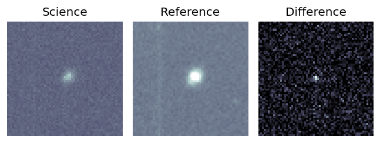
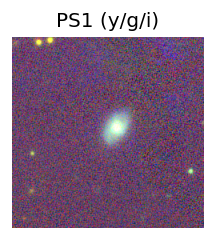
TESS: Sectors [42 43 44 70 71]
NED photo-z only: WISEA J034538.80+224459.0 (G, 2.8″) z=0.0654 [zflag PUN] — not used for peak abs mag
PS1: 1 source in 3 arcsec Closest: d = 2.68 arcsec photoz=0.06+/-0.00 peak abs mag = -17.79
LegacySurvey: 0 sources in 3 arcsec
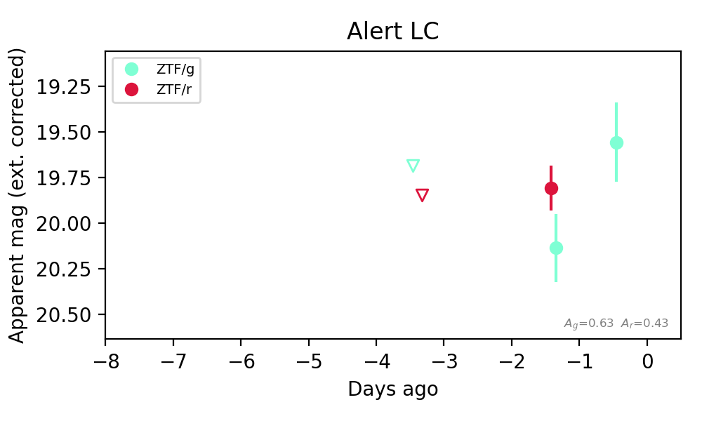
Extinction-corrected gr color:
From alerts: 0.33 +/- 0.22 mag
Consistent with synchrotron, g-r>0!
Rise Rate:
g: 0.65 mag/day
r: 0.02 mag/day
Fade Rate:
27. [ZTF] ZTF26acfaxng (Afterglow?) [Back to Top] [Share] [Trigger Swift] [Fritz Alert] [Fritz Source] [Lasair]RA, Dec: 43.92393, -14.25153 2h55m41.74s, -14d-15m-5.50sGalactic (l, b): 195.24611, -58.33636 ext(g-r) = 0.043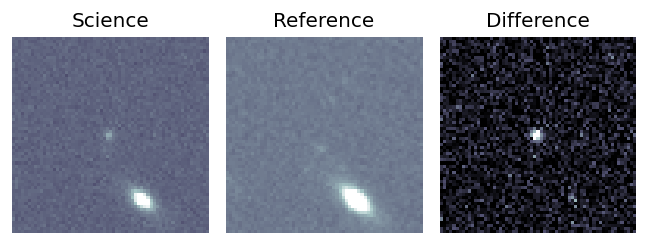
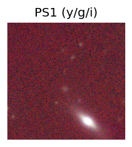
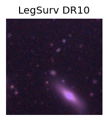
TESS: Sectors [ 4 31 108 109]
PS1: 0 sources in 3 arcsec
LegacySurvey: 1 sources in 3 arcsec Closest: d = 4.24 arcsec, 14.9 deg (east of north) photoz=0.9 (68% bounds 0.81, 1.01), type=EXP peak abs mag (ext. corrected) = -24.95 (68% bounds -24.66, -25.24)
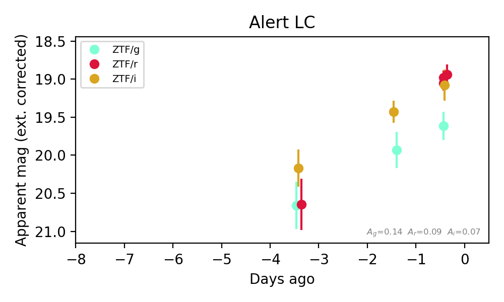
Extinction-corrected gr color:
From alerts: 0.62 +/- 0.19 mag
Extinction-corrected gi color:
From alerts: 0.54 +/- 0.28 mag
Extinction-corrected ri color:
From alerts: -0.08 +/- 0.21 mag
Consistent with synchrotron, g-r>0!
Rise Rate:
g: 0.35 mag/day
r: 0.56 mag/day
i: 0.36 mag/day
Fade Rate:
28. [ZTF] ZTF26acfcgta (Afterglow?) [Back to Top] [Share] [Trigger Swift] [Fritz Alert] [Fritz Source] [Lasair]RA, Dec: 63.85839, -11.97704 4h15m26.01s, -11d-58m-37.33sGalactic (l, b): 205.73252, -39.98099 ext(g-r) = 0.057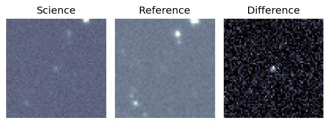
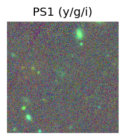
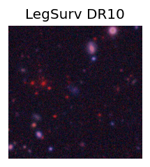
TESS: Sectors [ 5 32 109]
PS1: 0 sources in 3 arcsec
LegacySurvey: 1 sources in 3 arcsec Closest: d = 0.99 arcsec, 25.8 deg (east of north) photoz=0.1 (68% bounds 0.07, 0.22), type=EXP peak abs mag (ext. corrected) = -18.58 (68% bounds -17.7, -20.47)
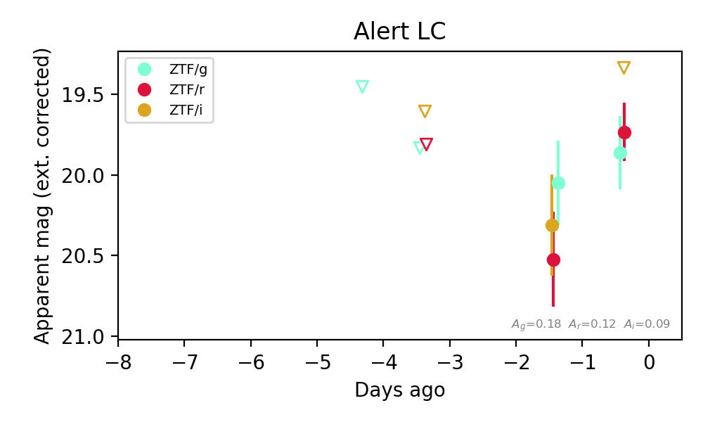
Extinction-corrected gr color:
From alerts: 0.13 +/- 0.29 mag
Extinction-corrected gi color:
From alerts: 0.53 +/- 99 mag
Extinction-corrected ri color:
From alerts: 0.4 +/- 99 mag
Consistent with synchrotron, g-r>0!
Rise Rate:
g: 0.03 mag/day
r: 0.74 mag/day
Fade Rate:
29. [LSST] 171167577750896661 (Afterglow?) [Back to Top] [Fritz Alert] [Fritz Source] [Lasair]RA, Dec: 64.87018, -46.9644 4h19m28.84s, -46d-57m-51.84sGalactic (l, b): 253.40752, -45.00269 ext(g-r) = 0.012


TESS: Sectors [ 4 5 30 31 32 97]
PS1: 0 sources in 3 arcsec
LegacySurvey: 1 sources in 3 arcsec Closest: d = 1.16 arcsec, 354.7 deg (east of north) photoz=0.13 (68% bounds 0.11, 0.15), type=SER peak abs mag (ext. corrected) = -17.47 (68% bounds -17.0, -17.77)

Extinction-corrected gr color:
From alerts: 0.02 +/- 0.04 mag
Extinction-corrected gi color:
From alerts: -0.16 +/- 0.08 mag
Extinction-corrected ri color:
From alerts: -0.18 +/- 0.07 mag
Consistent with synchrotron, g-r>0!
Rise Rate:
Fade Rate:
r: 1.0 mag/day